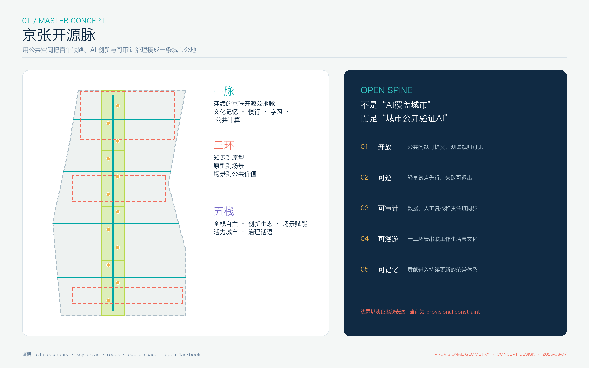
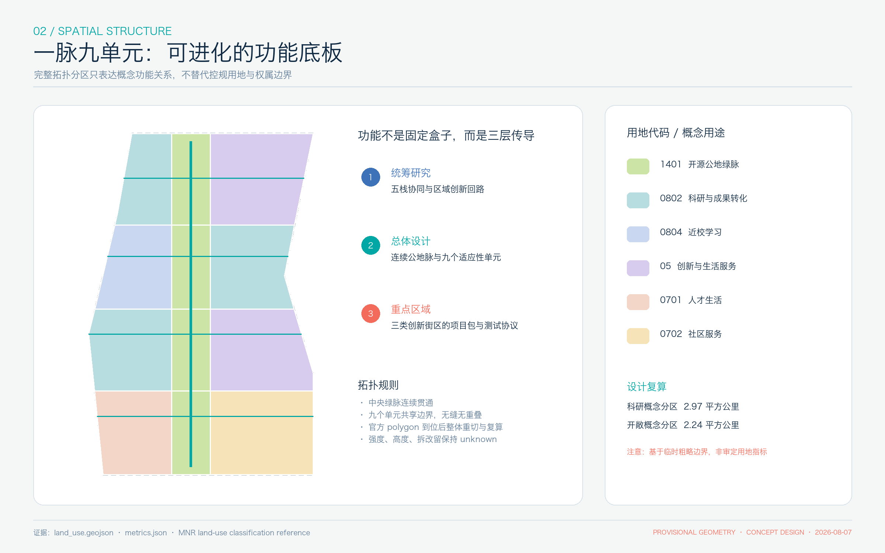
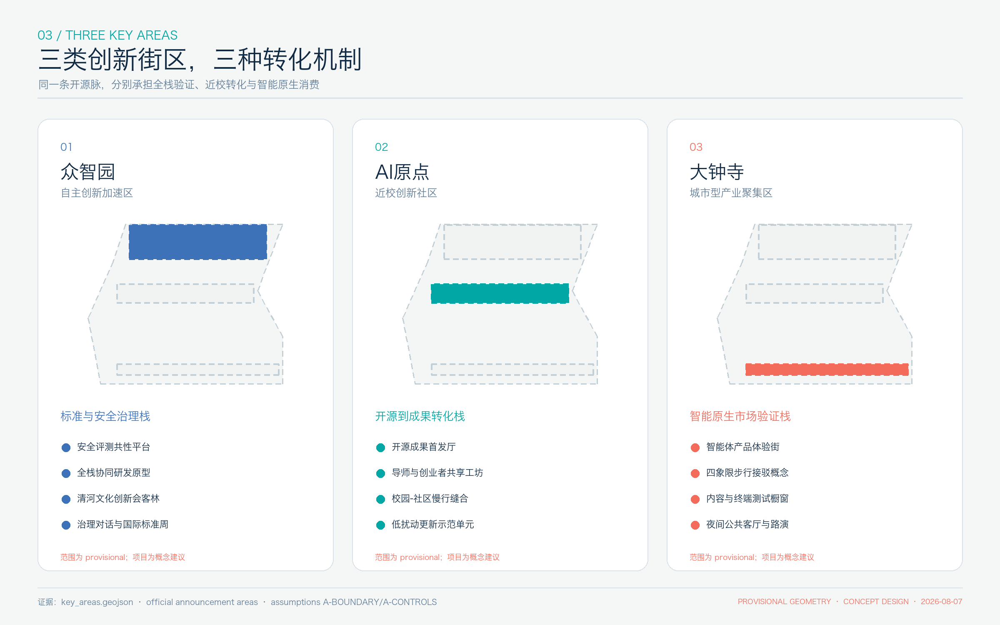
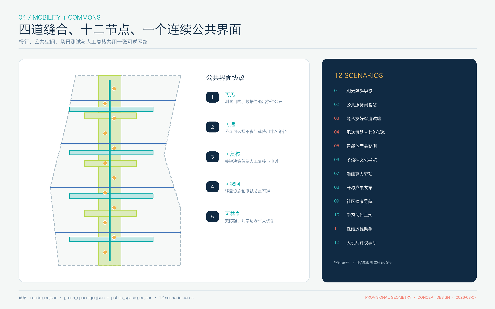
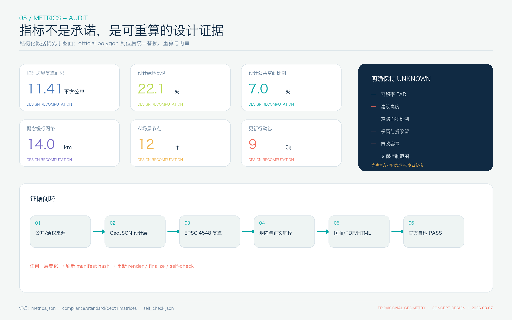

统筹研究范围
用“五栈”组织全栈自主、创新生态、场景赋能、活力城市与治理话语，并与三区两翼形成循环。
可验证、可漫游、可共创的 AI 城市公地。用一条连续公共界面，把铁路记忆、三区两翼、十二个可人工复核的场景和长期开放治理接成闭环。
以下均为投稿 GeoJSON 在 EPSG:4548 下的设计复算；不等同公告约面积或审定指标。

用“五栈”组织全栈自主、创新生态、场景赋能、活力城市与治理话语，并与三区两翼形成循环。
用“一脉九单元”表达完整、闭合、可替换官方边界后重算的概念功能底板。
三类街区分别承担安全治理、近校转化与智能原生市场验证。
容积率、高度、拆改留、道路线位、市政容量与文保控制保持 unknown。

全栈协同、安全评测、治理对话与花园型创新交往。
开源成果首发、近校孵化、低扰动更新与学习型社区。
智能体产品体验、内容消费、国际路演与步行接驳。

四道东西缝合支线接入连续南北公地脉；建筑只表达十二类可适配原型包络，不代表现状或拆改留结论。

九个概念行动包按依赖顺序推进：先资料、治理协议和可逆公共空间；再重点区专业深化与场景沙盒；最后讨论跨区网络和长期运营。分期不代表政府日程或土地开发时序。
命名与视觉、全球案例、十二场景、四类地标组件、文化叙事、长期运营均进入正文与图纸。
由 compliance_matrix.json 定位章节、图层、指标、图纸、来源与自检。
由 design_depth_matrix.json 提供证据链；缺资料项目以 unknown 而非虚构数值完成。
三处重点区 provisional warning 不阻断内容评分，但正式 polygon 到位后必须复算。

公告确认任务、三层范围文字与约面积；不提供精确 polygon。
确认六项 Agent 任务、场景、品牌与运营边界。
仅用于生成、展示与 intake 自检，官方数据到位后整体复算。
六个一手公开案例只提炼机制，不转移数据和政策条件。
官方边界、控规、道路、地块、建筑、文保、市政与设施底数仍缺。全部已登记在 assumptions.json，并在图面与正文限制表述。本页不加载 CDN、地图瓦片、远程字体、脚本、iframe、表单、API 或跟踪代码。